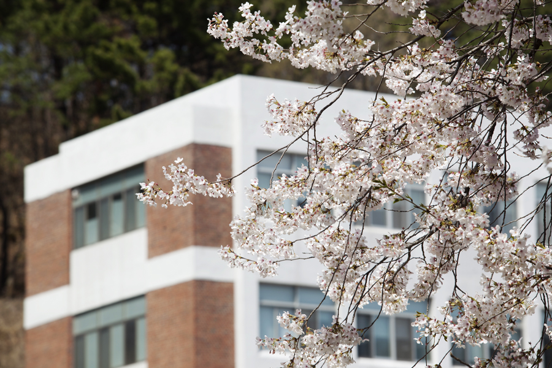

창학관

대전대학교 최초로 지어진 건물이다. 백제 고성인 갈현산성을 바라보고 있으며, 왼편으로는 계족산을, 오른편으로는 식장산을 마주하고 있다. 또한 창학관 아래로 보이는 ‘새울’ 마을은 설립자이신 고 지산 임달규 선생께서 한국전쟁당시 잠시 피난생활을 한 인연이 있다고 전해진다. 5층 건물로서 1981년 준공되었다. 가운데 중정을 놓은 것은, 설계상 없었는데 공사중 암반이 나온 때문이라고 한다.